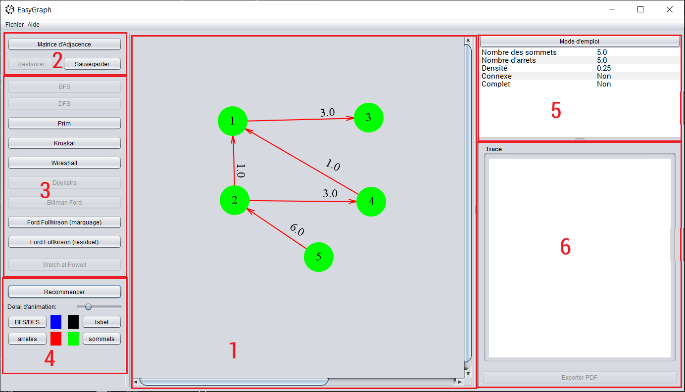
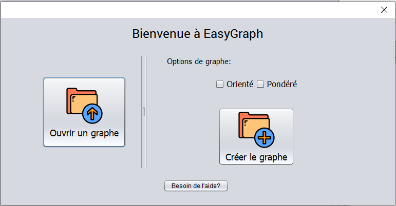

Un logiciel qui vous permet de dessiner et de manipuler des graphes, ainsi que d’appliquer des algorithmes sur ces graphes.
Commençons par expliquer chaque partie de notre interface:

Lorsque nous démarrons l’application, nous obtenons ce menu:

Dans cette menu, on peut specifier les parametre de notre graph:
Ou bien, ouvrir un graphe existent.
Pour commencer, vous avez deux options:
Pour créer un sommet, cliquez simplement à l’endroit où vous souhaitez le créer. Vous serez demandé de nommer ce sommet, assurez-vous que son libelle est unique.
Afin de créer, cliquez sur le sommet source, vous remarquerez qu’il sera sélectionné, puis cliquez sur le sommet de destination. Si le graphe est pondéré, vous serez demandé d’indiquer le coût.
Pour acceder a ce option, cliquez sur la bouton “Matrice D’adjacence” et une nouvelle fentere va apparaitre, dans laquelle vous avez deux option:
| Orienté | Pondéré | Pondéré positive | |
|---|---|---|---|
| BFS/DFS | - | - | - |
| Prim | - | Oui | - |
| Kruskal | - | Oui | - |
| Wireshall | - | - | - |
| Dijikstra | Oui | Oui | Oui |
| Billman-Ford | Oui | Oui | - |
| Ford-Fulkerson | Oui | Oui | - |
| Welch & Powell | Non | - | - |
Sur la partie paramètres de l’écran, nous pouvons trouver plusieurs options que nous pouvons ajuster, par exemple, les couleurs et le delai des algorithmes.
Je tiens à remercier Pr. Ghadi pour son encadrement et M. TALBI Abdelbari pour son superbe travail, que j’ai utilisé comme une base que j’ai essayé d’améliorer en ajoutant les fonctionnalités suivantes: